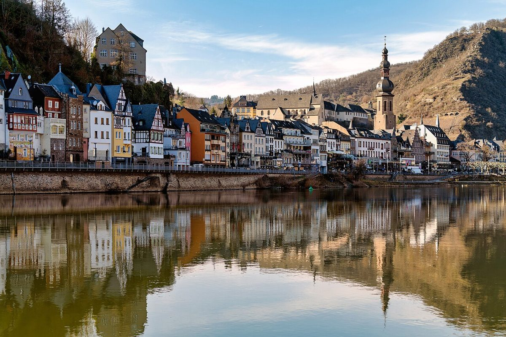

Cochem an der Mosel: Ein malerisches Reiseziel entdecken

Cochem an der Mosel: Ein malerisches Reiseziel entdecken
Eingebettet in das wunderschöne Moseltal liegt das bezaubernde Cochem, eine der schönsten Städte in Deutschland. Mit ihrer reichen Geschichte, malerischen Weinbergen und beeindruckenden Reichsburg bietet Cochem das perfekte Reiseziel für Kultur- und Naturliebhaber gleichermaßen.
Anreise nach Cochem
Cochem ist gut mit dem Auto, Zug oder Rad erreichbar. Autobahnen wie die A48 und A61 führen in die Nähe der Stadt. Wer lieber mit der Bahn anreist, findet regelmäßige Verbindungen von größeren Städten wie Köln oder Trier. Ein besonderes Erlebnis ist die Anreise mit dem Schiff, da viele Mosel-Kreuzfahrten in Cochem Halt machen.
Beste Reisezeit
Die ideale Zeit für einen Besuch in Cochem ist von April bis Oktober, wenn die Temperaturen angenehm sind und die Weinberge in sattem Grün erstrahlen. Besonders empfehlenswert sind die Sommermonate für gemütliche Spaziergänge entlang der Mosel und den Besuch von Weinfesten. Im Frühjahr und Herbst ist es etwas ruhiger, perfekt für entspannte Winzerbesuche.
Highlights in Cochem
Reichsburg Cochem
Die imposante Reichsburg thront hoch über der Stadt und bietet einen atemberaubenden Blick über das Moseltal. Die gut erhaltene Burganlage lässt sich im Rahmen einer Führung erkunden und ist ein Muss für Geschichtsinteressierte.
Moselpromenade
Flanieren Sie entlang der malerischen Moselpromenade und genießen Sie das lebendige Treiben auf dem Fluss. Die Uferwege laden zu entspannten Spaziergängen oder Radtouren ein.
Senfmühle
Die historische Senfmühle ist ein besonderes Kleinod. Hier wird noch heute Senf nach traditioneller Methode hergestellt – eine Kostprobe lohnt sich!
Weinberge
Cochem ist von herrlichen Weinbergen umgeben. Ein Spaziergang durch die terrassierten Weinberge offenbart nicht nur wunderschöne Ausblicke, sondern bietet auch die Chance, die berühmten Moselweine direkt vor Ort zu probieren.
Kulinarische Genüsse
Cocher Restauranttipp: Probieren Sie unbedingt den rustikalen Muscheln „à la Mosel“, traditionell in Weißweinsud zubereitet. Auch der saftige Moselwein ist ein Muss – besonders der Riesling mit seiner charakteristischen Säure. In den urigen Winzerstuben gibt es zudem deftige Hausmannskost wie Döppekooche (Kartoffelauflauf) oder Flammkuchen mit regionalen Zutaten.
Ob für einen Wochenendtrip oder einen längeren Urlaub – Cochem an der Mosel überzeugt mit seinem einzigartigen Charme und bietet unvergessliche Eindrücke inmitten einer der schönsten Flusslandschaften Deutschlands.
Haiktec
- YouTube Content ROI Tracker & Budget Planner 2026
- Effektiver Unterricht in 7 Schritten: Praktische Tipps für Lehrer & Nachhilfelehrer
- Baustellen-Kosten- und Arbeitszeit-Tracker für Handwerksbetriebe
Text mit KI erstellt und automatisch geprueft.